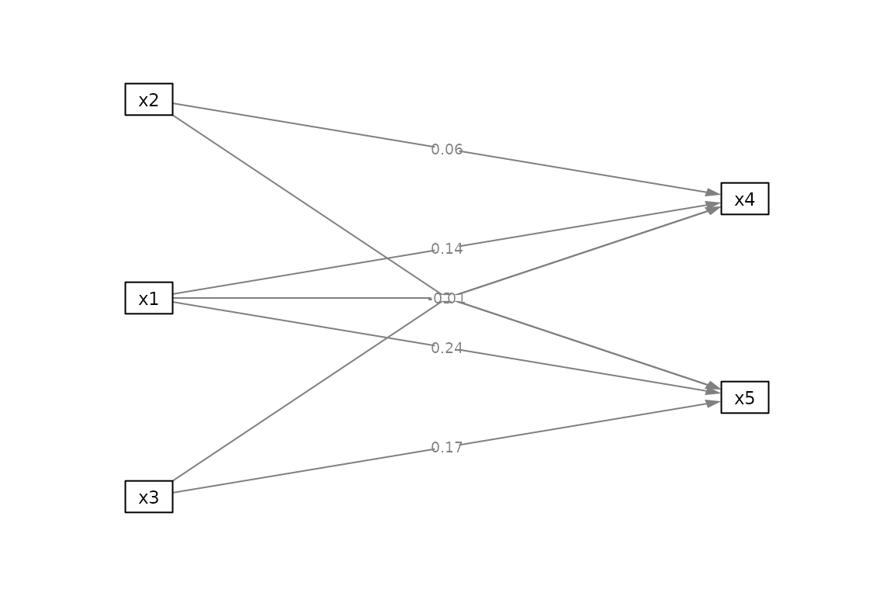
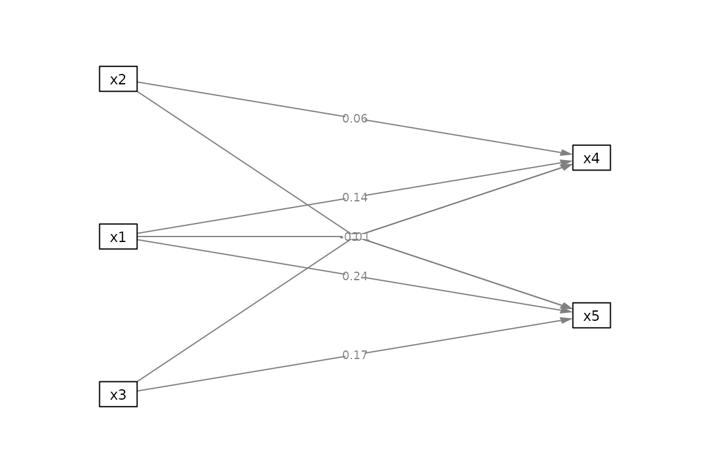

Convert a 'lm_list' Object To a Parameter Table
Source:R/many_lm_to_partable.R
lm_list_to_partable.RdConvert the output of
many_lm() to a lavann-style
parameter table.
Usage
lm_list_to_partable(
object,
keep_intercepts = FALSE,
vcov_args = list(),
pvalue_fun = NULL,
rsquare = FALSE
)Arguments
- object
The output of
many_lm()ormanymome::lm2list().- keep_intercepts
Logical. If
TRUE, the intercepts of the regression models and the means of the "pure" predictors (variables not being the outcome variables of any of the regression models) are kept in the parameter table. IfFALSE, the default, all intercepts and means will be removed.- vcov_args
A named list of arguments to be passed to
stats::vcov()when computing the standard errors of the regression coefficients. Default islist(), an empty list.- pvalue_fun
The function to be used to compute the p-values of regression coefficients. Ignored for now. Included for adding this feature in the future.
- rsquare
Logical. Whether R-squares will be included in the output, with
r2as the operator in the columnop. Default isFALSE. Not be included by default becausesemPlot::semPaths()will draw the R-squares over the residual variances.
Value
A data frame object with columns such
as lhs, op, rhs, and est,
major columns of the output of
lavaan::parameterTable() necessary
for plotting the model using
semPlot::semPaths().
Details
This function convert a a
lit of lm objects, such as the
output of many_lm() or
manymome::lm2list(), to a table of
parameter estimates similar to the
output of lavaan::parameterTable.
The output is designed to be used by
semPlot::semPaths() and so contains
only information necessary for the
plot.
The output of stats::lm() is
already supported by
semPlot::semPaths(), and it can
also combine a list of regression
models into on single plot. However,
it will convert interaction terms to
knots. Moreover, if two interaction
terms in two different models share
the a variable, it will be incorrectly
combined to become a single knot
(Version 1.1.6). Therefore, this
function was developed to let users
to draw the model as if it were a
path model in structural equation
modeling.
See also
many_lm() and manymome::lm2list().
Author
Shu Fai Cheung https://orcid.org/0000-0002-9871-9448
Examples
data(data_test1)
mod <- "x3 ~ x2*x1
x4 ~ x3
x5 ~ x4 + x3"
out <- many_lm(mod, data_test1)
out_ptable <- lm_list_to_partable(out)
out_ptable
#> lhs op rhs est se pvalue ustart free plabel
#> 1 x3 ~ x2 -0.04719457 0.09056225 0.6034773201 -0.04719457 1 .p1.
#> 2 x3 ~ x1 0.38226525 0.09649323 0.0001430661 0.38226525 2 .p2.
#> 3 x3 ~ x2:x1 0.01936404 0.08725501 0.8248439363 0.01936404 3 .p3.
#> 4 x4 ~ x3 0.21561806 0.08464649 0.0124119989 0.21561806 4 .p4.
#> 5 x5 ~ x4 0.14627056 0.11820189 0.2189021340 0.14627056 5 .p5.
#> 6 x5 ~ x3 0.23340830 0.10227462 0.0246639778 0.23340830 6 .p6.
#> 7 x3 ~~ x3 0.96519931 NA NA 0.96519931 0 .p7.
#> 8 x4 ~~ x4 0.86482672 NA NA 0.86482672 0 .p8.
#> 9 x5 ~~ x5 1.01196749 NA NA 1.01196749 0 .p9.
#> 10 x2 ~~ x2 1.25702511 NA NA 1.25702511 0 .p10.
#> 11 x2 ~~ x1 0.32595735 NA NA 0.32595735 0 .p11.
#> 12 x1 ~~ x1 1.10545608 NA NA 1.10545608 0 .p12.
#> 13 x2 ~~ x2:x1 -0.17705866 NA NA -0.17705866 0 .p13.
#> 14 x1 ~~ x2:x1 -0.15916402 NA NA -0.15916402 0 .p14.
#> 15 x2:x1 ~~ x2:x1 1.27350138 NA NA 1.27350138 0 .p15.
m <- matrix(c("x1", "x2", "x2:x1", NA, "x3", NA, "x4", NA, NA, NA, "x5", NA),
nrow = 3, ncol = 4)
m
#> [,1] [,2] [,3] [,4]
#> [1,] "x1" NA "x4" NA
#> [2,] "x2" "x3" NA "x5"
#> [3,] "x2:x1" NA NA NA
# The output can be used by semPlot::semPaths()
if (requireNamespace("semPlot", quietly = TRUE)) {
library(semPlot)
p <- semPaths(out_ptable,
what = "paths",
whatLabels = "est",
nCharNodes = 0,
style = "ram",
layout = m,
exoCov = FALSE,
DoNotPlot = TRUE)
plot(p)
# If it is desired to use knots to
# denote interaction terms, then,
# the output of many_lm() can be used
# directly.
m2 <- matrix(c("x1", NA, "x2", NA, "x3", NA, "x4", NA, NA, NA, "x5", NA),
nrow = 3, ncol = 4)
p2 <- semPaths(out,
what = "paths",
whatLabels = "est",
nCharNodes = 0,
style = "ram",
layout = m2,
exoCov = FALSE,
intercepts = FALSE,
DoNotPlot = TRUE)
plot(p2)
# This illustrates the problem with using
# the list of lm-outputs directly when
# a variable is involved in the interaction terms
# of two or more models.
m3 <- matrix(c("x2", NA, "x1", NA, "x3",
NA, NA, NA, NA, NA,
NA, "x4", NA, "x5", NA),
nrow = 5, ncol = 3)
mod3 <- "x4 ~ x2*x1
x5 ~ x3*x1"
out3 <- many_lm(mod3, data_test1)
p3 <- semPaths(out3,
what = "paths",
whatLabels = "est",
nCharNodes = 0,
style = "ram",
layout = m3,
exoCov = FALSE,
intercepts = FALSE,
DoNotPlot = TRUE)
plot(p3)
}
 
